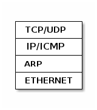

entendiendo la red
index | OSiUX | blog | docs | charlas
Topología, redes y Subredes
- centralizada

- descentralizada
- en malla o mesh

Asignación de IPs por medio de DHCP
- DHCP server
- DHCP client
Red de 4 equipos

B dice, necesito una IP!
- mensaje:
DHCPDISCOVER - protocolo: UDP
- puerto destino: 67
- dirección física: 01:12:23:34:45:bb

D dice, yo te puedo dar IP!
- mensaje:
DHCPOFFER - dirección física: 01:12:23:34:45:dd
- dirección IP: 192.168.10.102
- gateway: 192.168.10.1
- dns primario: 8.8.8.8
- dns secundario: 8.8.4.4

B dice, confirmo recepción!
- mensaje:
DHCPREQUEST

D dice, confirmo confirmación!
- mensaje:
DHCPACK

Resolución de nombres de dominios DNS
host localhost
localhost.gcoop.com.ar has address 127.0.0.1
dig osiux.com
; <<>> DiG 9.8.4-rpz2+rl005.12-P1 <<>> osiux.com ;; global options: +cmd ;; Got answer: ;; ->>HEADER<<- opcode: QUERY, status: NOERROR, id: 42728 ;; flags: qr rd ra; QUERY: 1, ANSWER: 1, AUTHORITY: 0, ADDITIONAL: 0 ;; QUESTION SECTION: ;osiux.com. IN A ;; ANSWER SECTION: osiux.com. 3600 IN A 96.8.118.129 ;; Query time: 529 msec ;; SERVER: 192.168.10.3#53(192.168.10.3) ;; WHEN: Mon Aug 11 12:18:04 2014 ;; MSG SIZE rcvd: 43
viendo un paquete de query dns
tcpdump -r dns-query.pcap -nvX
02:14:20.301428 IP (tos 0x0, ttl 64, id 27874, offset 0, flags [none], proto UDP (17), length 55)
127.0.0.1.57039 > 127.0.0.1.53: 39172+ A? osiux.com. (27)
0x0000: 4500 0037 6ce2 0000 4011 0fd2 7f00 0001 E..7l...@.......
0x0010: 7f00 0001 decf 0035 0023 fe36 9904 0100 .......5.#.6....
0x0020: 0001 0000 0000 0000 056f 7369 7578 0363 .........osiux.c
0x0030: 6f6d 0000 0100 01 om.....
analizando un paquete de query dns
tshark -r dns-query.pcap -VO dns
capturar consultas al dns
ssh root@linksys '/usr/sbin/tcpdump -i br0 -s 0 -w - dst port 53' >linksys.pcap
ranking de dns
tcpdump -r linksys.pcap -c 2000 -nnnA dst port 53 | \
egrep -o "A+\? .*\." | sed s/".$"//g | awk '{print $2}' | \
egrep -v "(osiux|fbcdn|akamai)" | sort | uniq -c | sort -nr | head
| 47 | www.facebook.com |
| 42 | dns.msftncsi.com |
| 41 | su.ff.avast.com |
| 37 | ssl.google-analytics.com |
| 37 | ipv6.msftncsi.com |
| 32 | www.habbo.es |
| 26 | imap.googlemail.com |
| 21 | dynamic.zoneedit.com |
| 19 | www.msftncsi.com |
| 18 | kiwwwi.com.ar |
Sniffers nmap, dsniff
nmap
nmap -sV --open 192.168.10.0/24 -p22 | head
Túneles y Redes Privadas Virtuales VPN
Redireccionar puertos con ssh
ssh -L 2525:localhost:25 osiux.com
Proxy Socks mediante ssh
ssh -D 9090 osiux.com
Tunel reverso con ssh
ssh -R 12345:localhost:22 osiux.com
Cómo saber la IP de un equipo?
B dice, cuál es la IP de D?
- Se que D es 00:14:d1:18:4a:dd
- Yo soy B y mi mac es 00:14:d1:18:4a:bb
- Todos reciben paquete ARP por difusión

D contesta, mi IP es 10.4.14.225

Quénes están en esta red?
sudo arp-scan --interface eth0 --localnet
pingueando
ping -c 5 127.0.0.1
PING 127.0.0.1 (127.0.0.1) 56(84) bytes of data. 64 bytes from 127.0.0.1: icmp_req=1 ttl=64 time=0.041 ms 64 bytes from 127.0.0.1: icmp_req=2 ttl=64 time=0.041 ms 64 bytes from 127.0.0.1: icmp_req=3 ttl=64 time=0.042 ms 64 bytes from 127.0.0.1: icmp_req=4 ttl=64 time=0.040 ms 64 bytes from 127.0.0.1: icmp_req=5 ttl=64 time=0.043 ms --- 127.0.0.1 ping statistics --- 5 packets transmitted, 5 received, 0% packet loss, time 3999ms rtt min/avg/max/mdev = 0.040/0.041/0.043/0.005 ms
capturando pings
sudo tcpdump -i lo -nnnt -c 5 icmp
viendo un ping
sudo tcpdump -i lo -nnntvvX -c 1 -e icmp
00:00:00:00:00:00 > 00:00:00:00:00:00, ethertype IPv4 (0x0800), length 98: (tos 0x0, ttl 64, id 0, offset 0, flags [DF], proto ICMP (1), length 84)
127.0.0.1 > 127.0.0.1: ICMP echo request, id 4177, seq 329, length 64
0x0000: 4500 0054 0000 4000 4001 3ca7 7f00 0001 E..T..@.@.<.....
0x0010: 7f00 0001 0800 a68d 1051 0149 e754 5e51 .........Q.I.T^Q
0x0020: 022f 0d00 0809 0a0b 0c0d 0e0f 1011 1213 ./..............
0x0030: 1415 1617 1819 1a1b 1c1d 1e1f 2021 2223 .............!"#
0x0040: 2425 2627 2829 2a2b 2c2d 2e2f 3031 3233 $%&'()*+,-./0123
0x0050: 3435 3637 4567
traceroute
traceroute -m 100 216.81.59.173
traceroute to 216.81.59.173 (216.81.59.173), 100 hops max, 60 byte packets 1 malbec (192.168.10.3) 0.122 ms 0.097 ms 0.092 ms 2 10.0.0.2 (10.0.0.2) 0.365 ms 0.498 ms 0.625 ms 3 host41.190-225-250.telecom.net.ar (190.225.250.41) 25.800 ms 27.846 ms 27.859 ms 4 host234.200-3-37.telecom.net.ar (200.3.37.234) 167.591 ms 167.956 ms 172.073 ms 5 nota.he.net (198.32.124.176) 168.887 ms 171.312 ms 172.928 ms 6 10ge1-1.core1.atl1.he.net (72.52.92.53) 193.802 ms 191.365 ms 191.587 ms 7 216.66.0.26 (216.66.0.26) 184.993 ms 188.306 ms 190.187 ms 8 10.26.26.22 (10.26.26.22) 235.499 ms 225.588 ms 226.880 ms 9 episode.iv (206.214.251.1) 226.717 ms 222.780 ms 214.857 ms 10 a.new.hope (206.214.251.6) 213.888 ms 215.234 ms 217.682 ms 11 it.is.a.period.of.civil.war (206.214.251.9) 222.060 ms 225.476 ms 226.414 ms 12 rebel.spaceships (206.214.251.14) 227.607 ms 228.344 ms 230.124 ms 13 striking.from.a.hidden.base (206.214.251.17) 227.923 ms 222.498 ms 226.275 ms 14 have.won.their.first.victory (206.214.251.22) 231.882 ms 232.536 ms 235.213 ms 15 against.the.evil.galactic.empire (206.214.251.25) 216.194 ms 217.155 ms 219.794 ms 16 during.the.battle (206.214.251.30) 212.404 ms 212.267 ms 212.793 ms 17 rebel.spies.managed (206.214.251.33) 217.427 ms 222.016 ms 216.993 ms 18 to.steal.secret.plans (206.214.251.38) 218.112 ms 222.297 ms 221.016 ms 19 to.the.empires.ultimate.weapon (206.214.251.41) 218.966 ms 214.283 ms 216.908 ms 20 the.death.star (206.214.251.46) 221.372 ms 219.275 ms 220.331 ms 21 an.armored.space.station (206.214.251.49) 214.741 ms 214.293 ms 213.658 ms 22 with.enough.power.to (206.214.251.54) 214.720 ms 213.825 ms 213.812 ms 23 destroy.an.entire.planet (206.214.251.57) 213.569 ms 214.667 ms 212.588 ms 24 pursued.by.the.empires (206.214.251.62) 214.232 ms 215.130 ms 214.558 ms 25 sinister.agents (206.214.251.65) 218.407 ms 213.382 ms 213.267 ms 26 princess.leia.races.home (206.214.251.70) 213.430 ms 215.620 ms 218.938 ms 27 aboard.her.starship (206.214.251.73) 220.497 ms 220.172 ms 218.771 ms 28 custodian.of.the.stolen.plans (206.214.251.78) 219.548 ms 218.508 ms 218.716 ms 29 that.can.save.her (206.214.251.81) 214.299 ms 212.348 ms 214.603 ms 30 people.and.restore (206.214.251.86) 219.313 ms 215.353 ms 218.010 ms 31 freedom.to.the.galaxy (206.214.251.89) 215.002 ms 214.554 ms 217.464 ms 32 0-----i-------i-----0 (206.214.251.94) 219.984 ms 218.233 ms 221.881 ms 33 0------------------0 (206.214.251.97) 218.426 ms 220.945 ms 216.499 ms 34 0-----------------0 (206.214.251.102) 217.423 ms 219.497 ms 218.999 ms 35 0----------------0 (206.214.251.105) 218.817 ms 213.941 ms 214.536 ms 36 0---------------0 (206.214.251.110) 213.257 ms 212.128 ms 213.997 ms 37 0--------------0 (206.214.251.113) 211.300 ms 214.245 ms 212.993 ms 38 0-------------0 (206.214.251.118) 214.309 ms 215.320 ms 214.756 ms 39 0------------0 (206.214.251.121) 218.343 ms 217.961 ms 218.586 ms 40 0-----------0 (206.214.251.126) 218.705 ms 218.247 ms 219.630 ms 41 0----------0 (206.214.251.129) 218.665 ms 216.114 ms 216.959 ms 42 0---------0 (206.214.251.134) 216.469 ms 216.377 ms 213.875 ms 43 0--------0 (206.214.251.137) 219.444 ms 218.224 ms 220.841 ms 44 0-------0 (206.214.251.142) 216.566 ms 227.724 ms 228.504 ms 45 0------0 (206.214.251.145) 233.489 ms 233.138 ms 234.345 ms 46 0-----0 (206.214.251.150) 230.366 ms 230.808 ms 231.747 ms 47 0----0 (206.214.251.153) 217.796 ms 219.704 ms 218.905 ms 48 0---0 (206.214.251.158) 216.717 ms 216.788 ms 217.904 ms 49 0--0 (206.214.251.161) 219.826 ms 217.786 ms 216.380 ms 50 0-0 (206.214.251.166) 216.732 ms 232.043 ms 232.020 ms 51 00 (206.214.251.169) 231.330 ms 234.243 ms 232.082 ms 52 i (206.214.251.174) 228.933 ms 225.122 ms 221.744 ms 53 by.ryan.werber (206.214.251.177) 218.451 ms 216.306 ms 225.370 ms 54 blizzards.breed.ccie.creativity (206.214.251.182) 222.909 ms 220.506 ms 220.908 ms 55 Please.Try.Again.Tracerote.to.obiwan.scrye.net (206.214.251.185) 212.229 ms 215.244 ms 231.799 ms 56 read.more.at.beaglenetworks.net (206.214.251.190) 235.904 ms 217.215 ms *
traceroute -m 255 obiwan.scrye.net|awk {'print $2'}
protocolos


Qué tiene un paquete TCP/IP?
+------------------------+--------------------------+ | MAC origen fe:ca:fe:ca | MAC destino ca:fe:ca:fe | +------------------------+--------------------------+ | IP origen 192.168.1.22 | IP destino 96.8.118.129 | +---------------------------------------------------+ | Puerto origen 45678 | Puerto destino: 80 | +------------------------+--------------------------+ | Nro Secuencia 12345 | Nro ACK | +---+---+---+---+---+----+--------------------------+ | U | A | P | R | S | F | GET / HTTP/1.0 | | R | C | S | S | Y | I | | | G | K | H | T | N | N | | +---+---+---+---+---+---+---------------------------+
Ethernet header
| |1 |2 |3 | |0|1|2|3|4|5|6|7|8|9|0|1|2|3|4|5|6|7|8|9|0|1|2|3|4|5|6|7|8|9|0|1| +-+-+-+-+-+-+-+-+-+-+-+-+-+-+-+-+-+-+-+-+-+-+-+-+-+-+-+-+-+-+-+-+ | Hardware type | Protocol type | +---------------+---------------+-------------------------------+ |Hw address len.|Pr address len.| Opcode | +---------------+---------------+-------------------------------+ | Source hardware address | +---------------------------------------------------------------+ | Source protocol address | +---------------------------------------------------------------+ | Destination hardware address | +---------------------------------------------------------------+ | Destination protocol address | +---------------------------------------------------------------+ | Data | +---------------------------------------------------------------+
IP header
| |1 |2 |3 | |0|1|2|3|4|5|6|7|8|9|0|1|2|3|4|5|6|7|8|9|0|1|2|3|4|5|6|7|8|9|0|1| +-+-+-+-+-+-+-+-+-+-+-+-+-+-+-+-+-+-+-+-+-+-+-+-+-+-+-+-+-+-+-+-+ |Version| IHL | Diff.Services | Total length | +-------+-------+---------------+-----+-------------------------+ | Identification |Flags| Fragment offset | +---------------+---------------+-----+-------------------------+ | TTL | Protocol | Header checksum | +---------------+---------------+-------------------------------+ | Source IP address | +---------------------------------------------------------------+ | Destination IP address | +---------------------------------------------------------------+ | Options and padding | +---------------------------------------------------------------+
UPD header
| |1 |2 |3 | |0|1|2|3|4|5|6|7|8|9|0|1|2|3|4|5|6|7|8|9|0|1|2|3|4|5|6|7|8|9|0|1| +-+-+-+-+-+-+-+-+-+-+-+-+-+-+-+-+-+-+-+-+-+-+-+-+-+-+-+-+-+-+-+-+ | Source Port | Destination Port | +-------------------------------+-------------------------------+ | Length | Checksum | +-------------------------------+-------------------------------+ | Data | +---------------------------------------------------------------+
TCP header
| |1 |2 |3 | |0|1|2|3|4|5|6|7|8|9|0|1|2|3|4|5|6|7|8|9|0|1|2|3|4|5|6|7|8|9|0|1| +-+-+-+-+-+-+-+-+-+-+-+-+-+-+-+-+-+-+-+-+-+-+-+-+-+-+-+-+-+-+-+-+ | Source Port | Destination Port | +-------------------------------+-------------------------------+ | Sequence Number | +-------------------------------+-------------------------------+ | Acknowledgment Number | +-------+-----+-----+-+-+-+-+-+-+-------------------------------+ |dOffset|rsrvd| ECN |U|A|P|R|S|F| Window | | | | |R|C|S|S|Y|I| | | | | |G|K|H|T|N|N| | +-------+-----+-----+-+-+-+-+-+-+-------------------------------+ | Checksum | Urgent Pointer | +-------------------------------+-------------------------------+ | Options and padding | +---------------------------------------------------------------+ | Data | +---------------------------------------------------------------+
ChangeLog
- simplifico y hago correcciones varias
- corrijo gráficos ascii-art
- primer borrador general